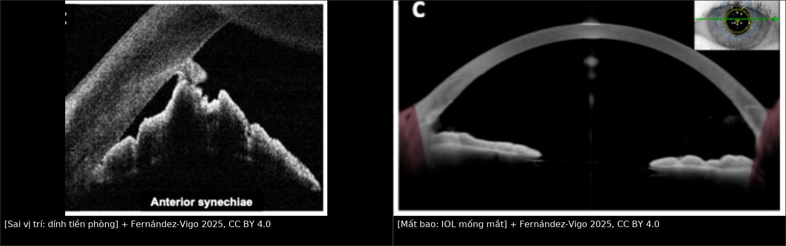
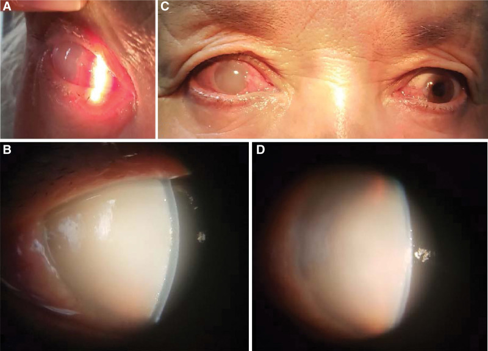
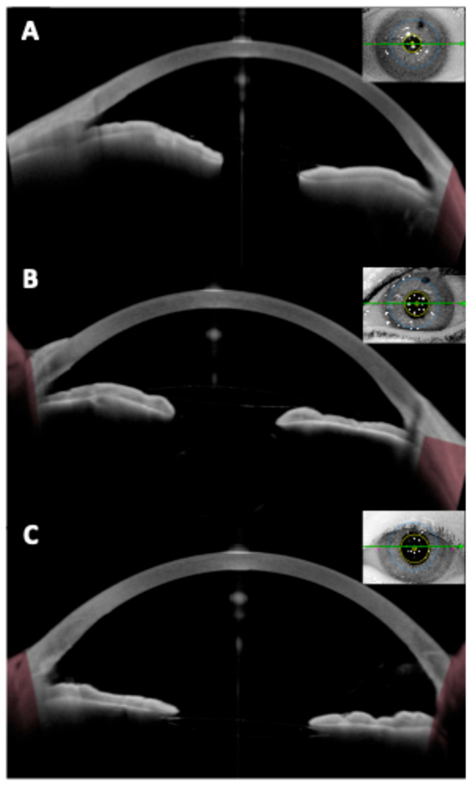
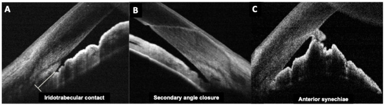

1454 — Đặt IOL ở mắt đã phacolytic: trong bao, rãnh thể mi hay không đặt / IOL implantation after phacolytic glaucoma
Tags: pattern:phacolytic pattern:mat-mot-ben pattern:phu-giac-mac vung:mat vung:the-thuy-tinh vung:tien-phong vung:goc-tien-phong anatomy:bao-the-thuy-tinh protocol:slit-lamp protocol:AS-OCT protocol:UBM protocol:do-nhan-ap protocol:phaco
Mức chắc chắn (certainty): tổng hợp y văn (literature synthesis) — đoàn hệ hồi cứu 488 mắt (279 phacolytic; PMC9240532), 50 nghiên cứu về IOL rãnh thể mi (PMC13047016), 38 mắt dùng kỹ thuật IOL làm giá đỡ (PMC36729596), 2 ca nguyên văn có ảnh (PMC9575782, PMC13512798) và 1 ca phacolytic không điển hình (PMID 38602030). Câu nào là suy luận được ghi [suy luận].
Vì sao bài này quan trọng: 1452 đã chốt chẩn đoán và việc phải lấy thể thủy tinh; câu hỏi còn lại trong phòng mổ là đặt IOL ở đâu — và câu trả lời không phải "cứ đặt trong bao". Trong 279 mắt phacolytic mổ MSICS, 95,5% IOL đặt vào rãnh thể mi (423/443), chỉ 4,5% trong bao, 1,2% cần vòng căng bao, và 5,1% không đặt được IOL (PMC9240532). Chọn sai vị trí gây cọ xát mống mắt/UGH, dính tiền phòng, hoặc mất thị lực vĩnh viễn vì chờ đợi — trong khi đặt IOL không hề chữa được tổn thương thị thần kinh đã có.
1. Tổng quan bệnh học – cơ chế hình ảnh
- Vì sao bao thể thủy tinh ở mắt phacolytic KHÔNG vững: thể thủy tinh chín/quá chín có vỏ mỏng, cortex hóa lỏng và nhân cứng; các sợi zonule bị kéo giãn, thoái hóa do thể tích thể thủy tinh tăng và viêm. Khi mở bao, vỏ trước giòn dễ rách lan (capsule tear), còn vỏ sau có thể đã có lỗ khuyết vi thể — đúng cơ chế protein rò qua bao ở phacolytic. Vì vậy "bao trông còn nguyên" không đồng nghĩa "bao chịu được IOL".
- TẠI SAO vị trí IOL thay đổi công suất: công suất IOL tính theo vị trí hiệu dụng của thấu kính (effective lens position, ELP). Rãnh thể mi nằm trước bao sau khoảng 0,3–0,5 mm, nên cùng một công suất sẽ cận thị hơn khi đặt rãnh; y văn khuyến cáo hiệu chỉnh công suất (power adjustment) nhưng không có con số thống nhất (PMC13047016). Trong đoàn hệ MSICS, 86,1% mắt phacolytic đạt khúc xạ cầu tương đương trong ± 1,0 D — nghĩa là vẫn có 13,9% lệch > 1 D, cần tư vấn trước mổ.
- TẠI SAO IOL 1 mảnh acrylic KHÔNG được đặt rãnh thể mi: IOL 1 mảnh có haptic 0° gắn liền optic, thiết kế cho trong bao; ở rãnh, haptic cọ mống mắt và thể mi, gây phân tán sắc tố, viêm, tăng nhãn áp, hội chứng UGH. IOL 3 mảnh (PMMA hoặc acrylic gập) có haptic nghiêng 10°, tựa vào rãnh mà không ép optic vào mống mắt — đây là lựa chọn chuẩn khi mất bao (PMC13047016).
- Vì sao phacolytic để lại hậu quả dù đặt IOL đúng: tăng nhãn áp 40–65 mmHg trong nhiều ngày làm teo thị thần kinh không hồi phục. Ca nguyên văn: IOP 65 mmHg, thị lực sáng tối, sau ECCE + IOL giác mạc trong, IOP 11 mmHg nhưng 1 tháng vẫn 6/120 vì đĩa thị nhợt và dẫn truyền thị giác giảm (PMC9575782). Vị trí IOL tốt không bù được thời gian chờ.
- Số liệu định lượng cốt lõi (279 mắt phacolytic, MSICS; PMC9240532):
- Loại IOL: 3 mảnh PMMA 90,8% (20 trong bao, 423 rãnh thể mi); 1 mảnh PMMA 2,0% (toàn bộ trong bao); IOL cố định mống mắt 2,0%; không đặt IOL 5,1% (25 mắt). Vòng căng bao (CTR) 1,2%.
- Biến chứng trong mổ: đứt zonule 7,5% (phacomorphic 1,4%; p = 0,002), lấy cả bao 5,0%, rách bao sau 3,9%, rơi nhân 0,4%, rơi IOL 0,4%.
- Ngày 1 sau mổ: phù giác mạc < 15 nếp Descemet 48,75%**, **> 15 nếp 8,60%, phù vi nang 30,82%; viêm màng bồ đào fibrin 35,48%; mủ tiền phòng 0,36%; IOL lệch 0,36%.
- 1 tháng: IOP < 21 mmHg 83,3% (trung bình 16,92 ± 8,2 mmHg); thị lực ≥ 6/18 73,1%; thị lực < 3/60 4,7%.
- Yếu tố tiên lượng: không tổn thương dịch kính → IOP < 21 mmHg OR 35,0 (3,8–325,7) và thị lực ≥ 6/18 OR 23,53 (5,1–108,0); tuổi < 60 giảm viêm nặng ngày 1 (OR 0,44; 0,23–0,83) và giảm phù giác mạc do tăng áp (OR 0,25; 0,12–0,54).
- Kỹ thuật "IOL làm giá đỡ" (IOL scaffolding): 35/38 mắt (92,1%) thành công, gồm 5 mắt phacolytic; 3 thất bại phải chuyển SICS thường (2) hoặc cố định mống mắt sau mống (1) (PMC36729596).
2. Mẫu hình + chẩn đoán phân biệt theo vị trí (gamut)
Câu hỏi trung tâm không phải "có đặt IOL không" mà "bao còn treo được IOL không". Thứ tự quyết định theo tình trạng bao–zonule:
- A. Bao nguyên, zonule tốt (hiếm ở phacolytic): đặt IOL trong bao — ưu tiên 3 mảnh hoặc 1 mảnh tùy chất liệu; nếu zonule yếu khu trú, thêm CTR.
- B. Bao nguyên nhưng zonule yếu / dialysis khu trú: IOL 3 mảnh trong bao + CTR hoặc rãnh thể mi + "optic capture" (nhét optic qua lỗ bao trước để IOL không trượt ra trước).
- C. Bao rách lớn, lấy cả bao, hoặc dialysis rộng: IOL 3 mảnh ở rãnh thể mi nếu còn vành bao–zonule đủ tựa; nếu không → IOL cố định mống mắt (iris-claw/retropupillary) hoặc cố định củng mạc (Yamane).
- D. Không còn bao, viêm nặng, không thấy đáy mắt: không đặt IOL trong thì đầu — lấy thể thủy tinh, kiểm soát viêm/áp, đặt IOL thì hai khi mắt ổn định; chấp nhận aphakia tạm.
- E. Bắt buộc tránh: IOL 1 mảnh acrylic ở rãnh thể mi (UGH, sắc tố, tăng nhãn áp) — chốt loại tuyệt đối (PMC13047016).
Gamut "vì sao không đặt được IOL" (5,1%): lấy cả bao/rách bao sau lan rộng; đứt zonule nhiều góc; nhân cứng rơi vào dịch kính; IOL rơi trong mổ (0,4%); viêm–phù giác mạc che mổ; bệnh nhân không đồng ý đặt IOL [suy luận từ các biến chứng trên].
3. Bảng so sánh phân biệt (ma trận đối chiếu)
| Thực thể (entity) | Hình ảnh/chỉ định điển hình | Chốt vào (rule-in) | Chốt loại (rule-out) | Gợi ý xác nhận |
|---|---|---|---|---|
| IOL trong bao (in-the-bag) | Bao còn liên tục, vỏ trước đủ rộng, zonule giữ vành bao; IOL nằm sau mống mắt, optic trong bao | Bao kín, không dialysis, vỏ trước còn vành ≥ 5 mm | Bao rách lan, mất vành bao, dialysis > 1 góc phần tư | Quan sát trực tiếp thì mổ; AS-OCT/UBM trước mổ khi nghi bao yếu |
| IOL rãnh thể mi 3 mảnh (sulcus 3-piece) | Haptic tựa rãnh, optic sau mống mắt; dùng khi bao hỏng nhưng còn vành bao | Còn vành bao–zonule để haptic tựa; IOL 3 mảnh | Không còn vành bao, rãnh hẹp, IOL 1 mảnh acrylic | Soi rãnh thì mổ; kiểm tra tilt/centration bằng AS-OCT sau mổ |
| IOL cố định mống mắt (iris-claw/retropupillary) | IOL treo vào mặt sau mống mắt; dùng khi không còn bao | Không còn bao/sulcus không đủ tựa; mống mắt còn đủ mô | Mống mắt teo, rách, góc đóng/dính tiền phòng | AS-OCT: khoảng cách optic–nội mô, centration |
| IOL cố định củng mạc (Yamane/scleral-fixated) | Haptic xuyên củng mạc, cố định không khâu; dùng khi mất bao hoàn toàn | Không còn bao + không đủ mống mắt, mắt không viêm cấp | Viêm nội nhãn/viêm màng bồ đào hoạt động, củng mạc mỏng | AS-OCT/UBM: vị trí haptic, tilt; khám củng mạc |
| Không đặt IOL (aphakia) | Không có IOL; mắt aphakic, đeo kính/contact lens hoặc IOL thì hai | Viêm nặng, bao–zonule mất hoàn toàn, không thấy đáy mắt | Mắt ổn định, đủ điều kiện đặt IOL thì một | Theo dõi 1 tuần–1 tháng; đo lại sinh trắc khi ổn định |
| IOL 1 mảnh acrylic ở rãnh | Haptic 0° cọ mống mắt; sắc tố, viêm, tăng nhãn áp | Không có chỉ định — chỉ dùng trong bao | Mọi trường hợp cần đặt rãnh | Loại trừ khỏi lựa chọn |

Trái: dính tiền phòng (anterior synechiae) sau đặt IOL sau phòng — góc bị bít, nguy cơ tăng nhãn áp. Phải: IOL cố định mống mắt ở mắt aphakic, optic nằm sau mống mắt, không tựa bao. Nguồn: Fernández-Vigo JI et al., Diagnostics 2025 (PMC12468152), CC BY 4.0; ảnh ghép letterbox.4. Protocol chụp + hệ phân độ/điểm chuẩn hóa
- Trước mổ — đánh giá bao và hậu đoạn:
- Đèn khe: độ sâu tiền phòng, phù giác mạc, tế bào/flare, màng fibrin, dính đồng tử sau; đánh giá vỏ trước, nhân, vỏ sau và độ vững của vành bao.
- AS-OCT / UBM: đo độ sâu tiền phòng, phát hiện vỡ bao sau, mảnh cortex sau bao, dính tiền phòng; khi giác mạc phù nhiều, UBM hữu ích hơn (bước sóng xuyên qua đục).
- Siêu âm B-scan: khi không thấy đáy mắt — loại trừ rơi nhân/dịch kính, bong võng mạc, xuất huyết dịch kính.
- Sinh trắc (biometry): chỉ đáng tin khi giác mạc đủ trong và IOP đã hạ; ghi rõ mắt đang viêm vì có thể lệch khúc xạ.
- Trong mổ — nguyên tắc chọn vị trí:
- Kiểm tra bao sau sau khi lấy nhân: nếu còn liên tục và vành bao vững → cân nhắc trong bao; nếu nghi ngờ → mặc định rãnh thể mi 3 mảnh.
- Vòng căng bao (CTR) khi zonule yếu nhưng bao còn; không dùng CTR thay thế IOL cố định củng mạc khi mất vành bao.
- IOL scaffolding: giữ IOL 3 mảnh trong bao như giá đỡ để bao không xẹp sau khi lấy nhân — thành công 35/38 (92,1%) (PMC36729596).
- Optic capture qua lỗ bao trước khi đặt rãnh để giảm tilt và trượt optic ra trước (PMC13047016).
- Viscoelastic phân tán + thì mổ nhẹ nhàng vì nội mô đã tổn thương do IOP cao.
- Sau mổ — theo dõi có ngưỡng:
- Ngày 1: đo IOP, đánh giá phù giác mạc (đếm nếp Descemet), fibrin, vị trí IOL. Phù < 15 nếp** gặp **48,75%**, **> 15 nếp gặp 8,60% — thường do tăng áp/viêm, không mặc định là nhiễm trùng.
- 1 tuần / 1 tháng / 3 tháng: IOP, thị lực, khúc xạ, AS-OCT kiểm tra tilt/centration; mục tiêu IOP < 21 mmHg (đạt 83,3% ở đoàn hệ) và thị lực ≥ 6/18 (đạt 73,1%).
- Khi nào kết hợp trabeculectomy: theo hướng dẫn thực hành — tổn thương thị thần kinh nặng, IOP không kiểm soát dù nhiều thuốc, không theo dõi được, không thể mổ hai thì, hoặc IOP vẫn cao sau khi lấy thể thủy tinh (PMC9907291). Ngược lại, glôcôm nhẹ kiểm soát bằng 1–2 thuốc → chỉ lấy thể thủy tinh trước, đánh giá lại sau 1 tháng.
- Không có hệ phân độ chính thức cho "vị trí IOL sau phacolytic". Dùng thuật toán 3 câu hỏi: (1) Bao còn vành tựa không? (2) Rãnh thể mi còn đủ rộng không? (3) Mắt còn viêm/không thấy đáy mắt không?
flowchart TD
A[Mắt đã phacolytic, chuẩn bị lấy thể thủy tinh] --> B{Bao sau còn liên tục và vành bao vững?}
B -->|Có| C{Zonule có yếu khu trú?}
C -->|Không| D[IOL trong bao]
C -->|Có| E[IOL trong bao + CTR hoặc rãnh + optic capture]
B -->|Không| F{Còn vành bao để haptic tựa?}
F -->|Có| G[IOL 3 mảnh rãnh thể mi]
F -->|Không| H{Mống mắt còn đủ mô?}
H -->|Có| I[IOL cố định mống mắt]
H -->|Không| J[IOL cố định củng mạc Yamane]
A --> K{Mắt viêm nặng hoặc không thấy đáy mắt?}
K -->|Có| L[Không đặt IOL thì đầu - aphakia tạm]
L --> M[Đặt IOL thì hai khi ổn định]
5. Biến thể bình thường và cạm bẫy
- Biến thể: bao trông nguyên nhưng mất vành tựa — vỏ trước rách nhỏ, vỏ sau mỏng; không đủ để giữ IOL trong bao dù "không thấy rách". Kiểm tra bằng scaffolding hoặc chọn rãnh.
- Cạm bẫy 1 — "cứ đặt trong bao cho tự nhiên": ở phacolytic, đứt zonule 7,5% và lấy cả bao 5,0%; cố đặt trong bao khi vành bao yếu dẫn tới IOL lệch/rơi (0,4%) và phải mổ lại.
- Cạm bẫy 2 — IOL 1 mảnh acrylic ở rãnh: gây cọ xát mống mắt, phân tán sắc tố, UGH; đây là chống chỉ định, không phải "linh hoạt".
- Cạm bẫy 3 — IOL quá lớn/đặt quá trước: optic ép mống mắt ra trước → dính tiền phòng, góc đóng thứ phát (ảnh phải của composite). Chọn đúng đường kính và kiểm tra khoảng cách optic–nội mô trên AS-OCT.
- Cạm bẫy 4 — hứa "mổ là hết mờ": IOL chỉ thay thấu kính; teo thị thần kinh do IOP 40–65 mmHg không hồi phục. Ca 6/120 dù IOL trong bao, giác mạc trong, IOP 11 mmHg (PMC9575782) là bài học tư vấn.
- Cạm bẫy 5 — IOP vẫn cao sau khi lấy thể thủy tinh: có thể đã có tổn thương bè/traumatic outflow; ca hỗn hợp IOP 45,3 mmHg sau lensectomy phải trabeculectomy + MMC, 6 tháng IOP 20,1 mmHg với 3 thuốc, thị lực bóng tay 30 cm (PMC13512798). Đừng quy mọi tăng áp sau mổ cho "viêm".
- Cạm bẫy 6 — coi aphakia là thất bại: 5,1% mắt không đặt được IOL; đặt IOL muộn khi mắt ổn định an toàn hơn cố đặt trong mắt đang viêm, phù giác mạc.
6. Tự lượng giá — Blind Quiz
Ca 1 — Nữ 63 tuổi, đỏ–đau–mờ mắt phải 1 tuần, IOP 65 mmHg, được tuyến trước điều trị như viêm nội nhãn.

- Gợi ý: thị lực sáng tối; tiền phòng sâu; không chấn thương; mắt bên có đục thể thủy tinh chưa chín.
- Hỏi: (1) Vì sao không thấy mống mắt? (2) Sau khi rửa tiền phòng thấy gì? (3) Vì sao đặt IOL đúng vị trí mà thị lực cuối vẫn kém?
Bấm để hiện đáp án
- Dấu hiệu: (a) mắt đỏ, phù mi; (b) giác mạc phù đục, tiền phòng đục như sữa che mống mắt/thể thủy tinh; (c) giảm phù sau điều trị; (d) vẫn đục.
- Sau rửa tiền phòng: thấy thể thủy tinh Morgagnian; tế bào học dịch tiền phòng có đại thực bào ngấm protein thể thủy tinh → xác nhận phacolytic, không phải viêm nội nhãn.
- Diễn biến: IOP vẫn > 40 mmHg sau rửa, phải dùng thuốc + chọc tiền phòng hằng ngày 5 ngày, rồi ECCE + IOL; IOL nằm trong bao; 1 tháng IOL 11 mmHg, giác mạc trong, nhưng 6/120 vì đĩa thị nhợt và dẫn truyền thị giác giảm.
- Bài học: vị trí IOL không cứu được thời gian tăng áp; cần mổ sớm khi IOP còn kiểm soát được.
- Nguồn: Medicine 2022, PMC9575782, CC BY 4.0 (Fig. 1).
Ca 2 — Mắt aphakic, không còn bao thể thủy tinh; AS-OCT mặt cắt ngang.

- Gợi ý: bệnh nhân đã lấy thể thủy tinh, không đặt được IOL trong bao/rãnh.
- Hỏi: (1) IOL đang tựa vào đâu? (2) Vì sao không đặt trong bao? (3) Hai lựa chọn thay thế nếu mống mắt không đủ mô?
Bấm để hiện đáp án
- Dấu hiệu: (A, B) IOL cố định mống mắt (Artisan/Artiflex) — optic nằm trước mống mắt, hai haptic kẹp mống mắt; (C) IOL cố định mặt sau mống mắt (retropupillary iris-claw) — optic nằm sau mống mắt, sát mặt trước dịch kính.
- Vì sao không trong bao/rãnh: mất bao–zonule hoặc vành bao không đủ tựa; đặt rãnh sẽ lệch/tilt.
- Nếu mống mắt không đủ mô: IOL cố định củng mạc (Yamane) hoặc aphakia + kính/contact lens, đặt IOL thì hai.
- Nguồn: Fernández-Vigo JI et al., Diagnostics 2025 (PMC12468152), CC BY 4.0 (Fig. 6).
Ca 3 — AS-OCT góc tiền phòng sau đặt IOL sau phòng.

- Gợi ý: bệnh nhân đã đặt IOL sau phòng; IOP tăng dần, góc hẹp trên soi góc.
- Hỏi: (1) Mô tả ba kiểu bất thường góc (A, B, C)? (2) Cơ chế nào liên quan IOL? (3) Cách phòng?
Bấm để hiện đáp án
- Dấu hiệu: (A) tiếp xúc mống mắt–bè (iridotrabecular contact); (B) đóng góc thứ phát; (C) dính tiền phòng (anterior synechiae) — mống mắt dính vào mặt sau giác mạc/góc.
- Cơ chế: IOL quá lớn hoặc đặt quá trước đẩy mống mắt ra trước; viêm sau mổ tạo fibrin dính; mắt phacolytic vốn có hàng rào máu–thủy dịch bị phá vỡ.
- Phòng: chọn đúng đường kính, đặt optic sau mống mắt, optic capture khi cần, kiểm soát viêm, theo dõi IOP/góc sau mổ.
- Nguồn: Fernández-Vigo JI et al., Diagnostics 2025 (PMC12468152), CC BY 4.0 (Fig. 2).
Bài liên quan chéo
- 400 – Tổng quan Mắt & thị giác
- 1452 – Glôcôm do thể thủy tinh chưa mổ: phacolytic & viêm do protein thể thủy tinh
- 1442 – Mảnh thể thủy tinh còn sót trong tiền phòng
- 1411 – Tăng nhãn áp do corticoid nội nhãn
- 442 – Glôcôm & OCT: RNFL/GCL
Không dùng để chẩn đoán độc lập khi chưa có người hướng dẫn.